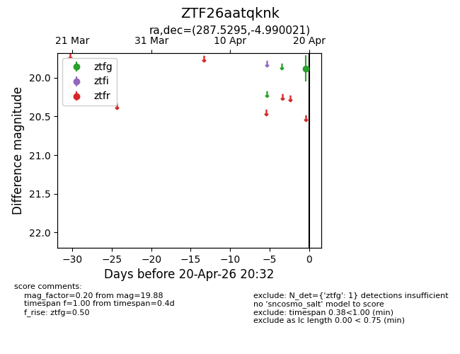
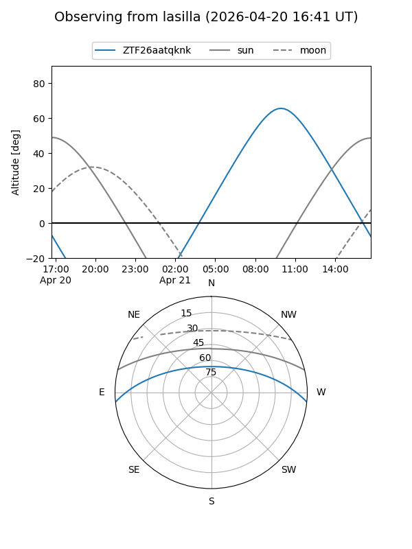
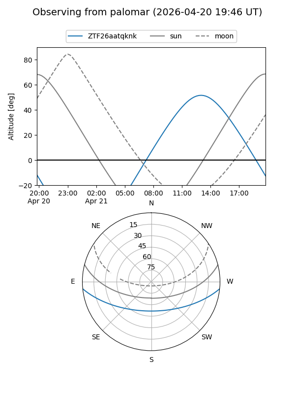

ZTF26aatqknk
Target ZTF26aatqknk at 2026-04-20 20:42
Aliases and brokers:
FINK: link
Lasair: link
ALeRCE: link
alt names
ZTF26aatqknk (ztf,fink_ztf)
Coordinates:
equatorial (ra, dec) = 287.5295,-4.99002
equatorial (HMS+DMS) = 19:10:07.09,-04:59:24.07
galactic (l, b) = (30.6003,-6.42189)
Flags:
Photometry:
last ztfg=19.88
1 ztfg detections
Lightcurve

Visibility


Additional plots